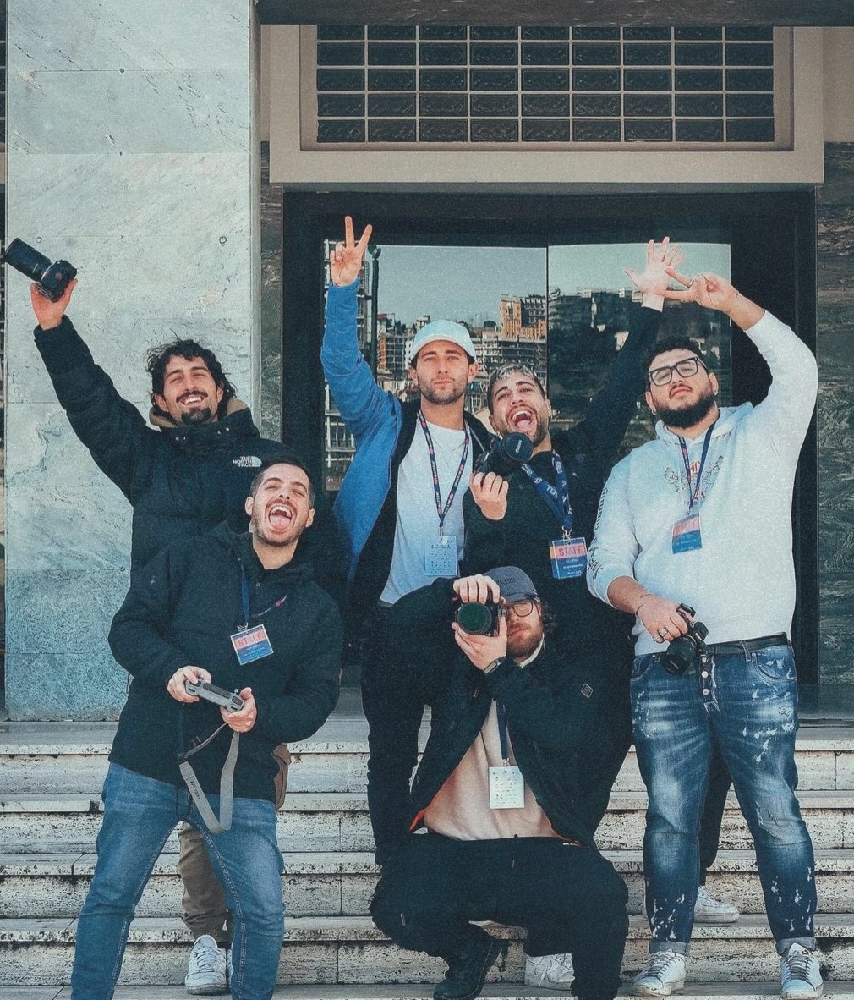
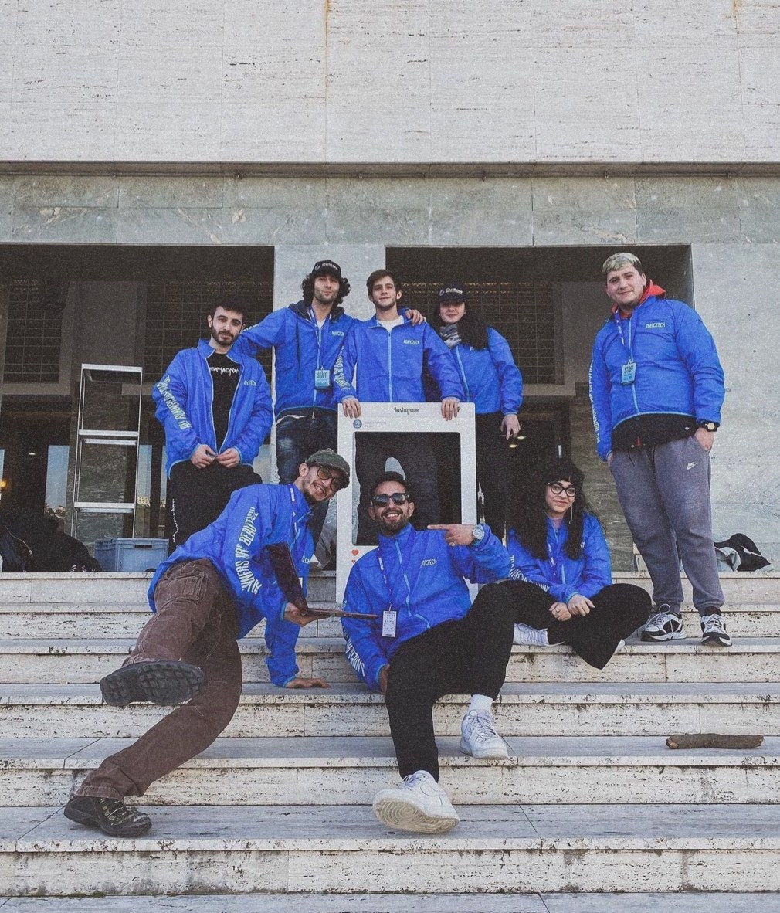
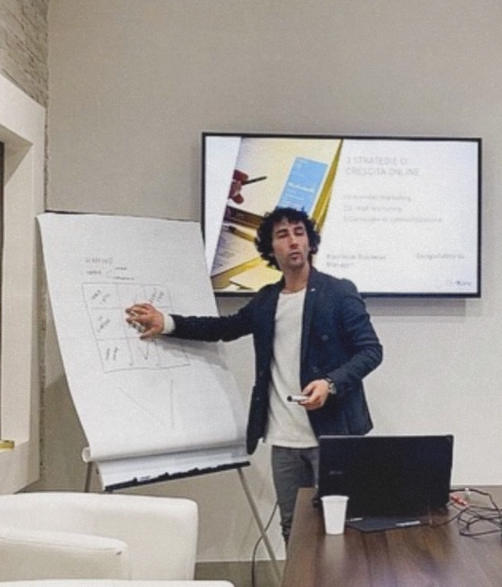

Napoli
Running

Il grande running a Napoli
Napoli Running nasce il 19 ottobre 2016 e raccoglie l’esperienza, l’energia e l’entusiasmo di un gruppo di lavoro fondato da Carlo Capalbo, napoletano, che ha dedicato la vita al running e ai successi delle grandi maratone europee.
La Napoli City Half Marathon, premiata con il Bronze Label World Athletics e la certificazione European Athletics, porta ogni anno migliaia di runner a correre 21,097 km nei luoghi più belli di Napoli.
Sei anni di gare in video
Dal 2019 al 2024 abbiamo prodotto i video ufficiali della Napoli City Half Marathon e della Sorrento Positano. Per ogni evento: il video dell’expo, quello della Family Run & Friends, il trailer della gara e il video in formato lungo.
Correre per una causa
Abbiamo prodotto anche i video ufficiali del Bosco in Rosa, una gara non competitiva per sole donne che si corre nel Bosco di Capodimonte a scopo benefico.
I video ufficiali
2019 — 2024Il team
Sul campo con lo staffDietro ogni video c’è una squadra: operatori, fotografi e montatori sul percorso, dalla partenza all’arrivo.



Grazie al suo lavoro e di tutto il suo team possiamo mostrare tutta la bellezza di questa città e di questo sport a tutto il mondo.